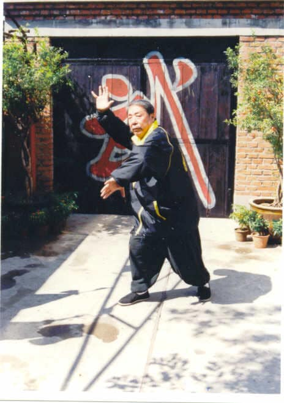

Principles of Dachengquan
The principle of Dachengquan, Master Wang said is that “There is
no method for martial art. Even with a method there is still
nothing. If we do not accept any method, then we can have all
kinds of methods.” In this case method means styles, skills and
techniques. He also said, “Something comes from nothing and
steadiness is the mother of movement.” Dachengquan concentrates on
developing the mind and spirit. Practising Zhan Zhuang will
develop the mind, calmness, relaxation and a strong foundation.
When the spiritual energy is high and you need to defend yourself,
you will be able to move naturally, powerfully and instinctively.
Just like an animal living in the natural world fights
instinctively and powerfully. Everything comes from natural
instinct, just like a baby needs milk from its mother and bees
need honey. Sometimes even a very weak person, if they have a
sudden mad fit, can be very powerful and it can take many people
to hold them down. This is spiritual instinct, but this power
needs to be developed through stillness and a calm mind. This is
what meditation develops and so when you need power it will come
naturally.

Dachengquan Master Wang Xuanjie